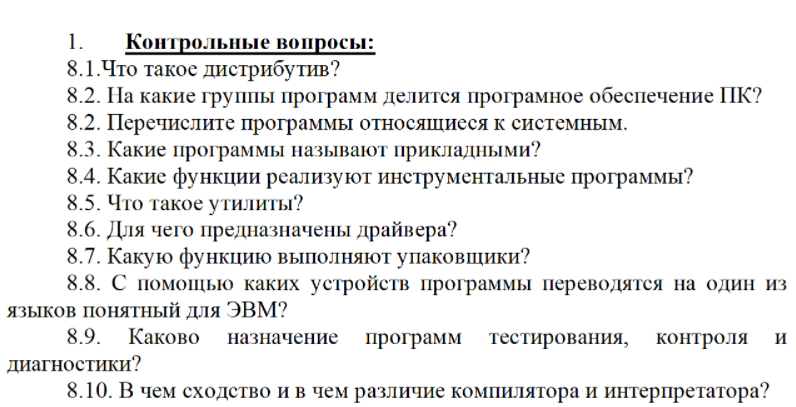
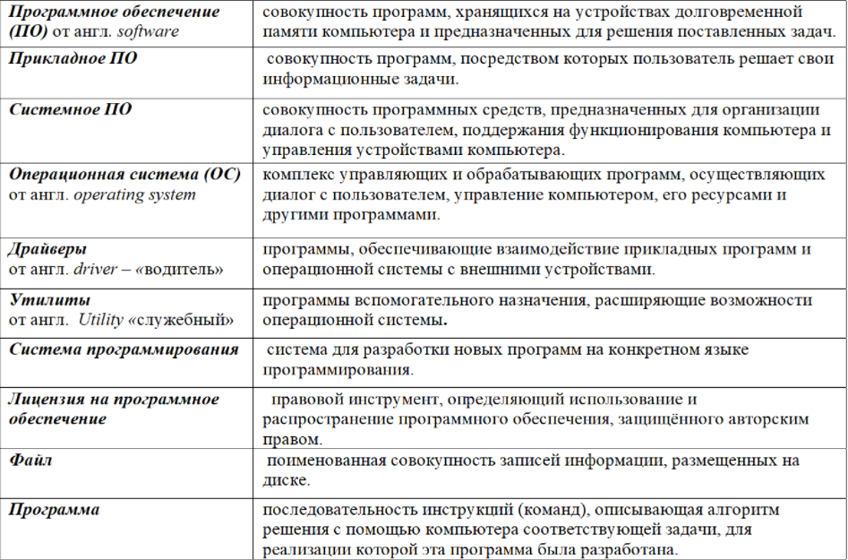
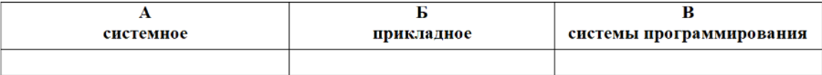
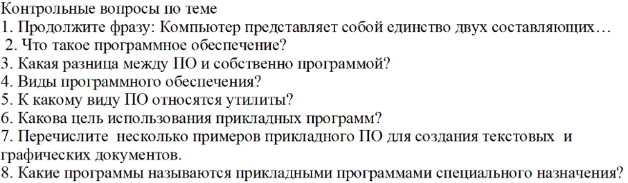

ПРОГРАММНОЕ ОБЕСПЕЧЕНИЕ ПК
-
Прочитайте теоритические сведенья
Ответте на контрольне вопросы:

-

ПРАКТИКУМ
Задание № 1
Соотнесите данные программы к своему классу программного обеспечения. Запишите в таблице под каждой буквой необходимые программы и опишите их назначение. Paint,Windows Media Player,Калькулятор,Dr Web, Фортран, Си, Лисп, Windows Vista, Pascal, WinRar, Касперский, Ассемблер, Avast, Блокнот, Skype, Алгол, ISQ, Linux, MS Office Word, операционные системы, WinZip, Пролог , драйвера, C++, MS Office Excel, игры, переводчики, проигрыватели, Adobe PhotoShop, утилиты, Basic, WordPad, Linux, Аutocad, CCleaner, Scandisk, Delphi, MS DOS, FineReader

-
Ответьте на вопросы по теме:

-
Задание № 2
По данной теме составьте кроссворд или тест от 10-15 слов или вопросов
- Практическое задание:
Задание для самостоятельной работы:
1. Зайдите на сайт Avast!
2. Установите на свой компьютер антивирусную программу для домашнего использования, размещая пиктограммы этого антивируса на Рабочем столе.
3.Сохраните скриншот рабочего стола с пиктограммами установочного файла антивируса и пиктограммой самого антивируса с именем Virus.jpg
4. Отошлите скриншот Virus.jpg преподавателю.
Ответьте на вопросы:
|